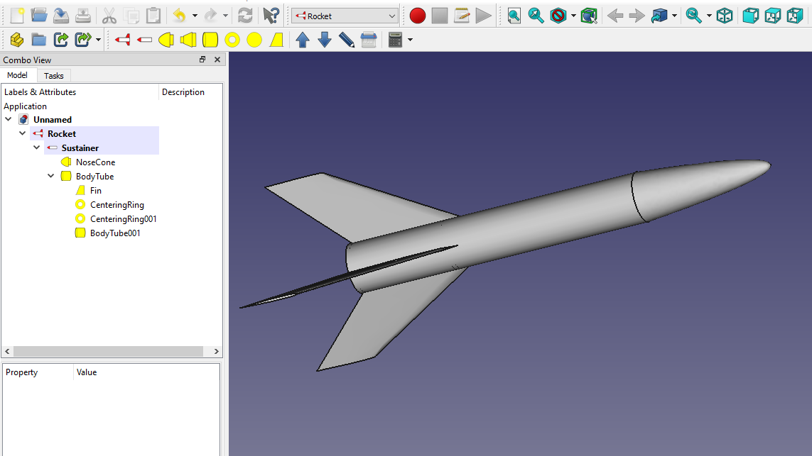

La conception d'une fusée ou tout autre engin est la base même de l'aérospatiale, sans ça,
on ne pourrait pas construire d'engin suffisament puissant pour accomplir ce que nous avons déja faits.
Pour cela, nous concevons les engins sur papiers car cela permet d'être très précis, malheureusement,
ce n'est pas du tout pratique lorsqu'on conçoit des objets 3D.
On va donc utiliser l'informatique afin de réaliser ces plans plus rapidements, en relief pour avoir une meilleur vision du produit et surtout pour avoir un plan beaucoup plus réaliste. |
 |
Pour ce faire, on va utiliser des moteurs de rendus 3D et de modélisation qui permettent de créer des formes et objets et de leur donner une texture ce qui permet donc de créer l'objet désiré avec précision,
et avec les nouvelles technologies, voir la taille réelle et tester leur fonctionnement à petite échelle aussi, avec les imprimantes 3D. On peut aussi les imprimer ou bien utiliser des machines pour découper ces pièces dans du métal ou autre pour que la pièce soit plus résistante.
Cependant, des fois il n'est pas possible de faire des tests même à petite échelle, il faut donc trouver un moyen d'être sûr qu'il n'y aura pas de problèmes lors du lancement, la technologie intervient ici de nouveau! |